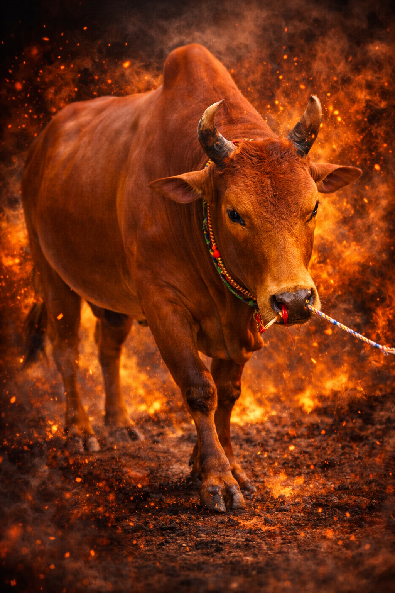
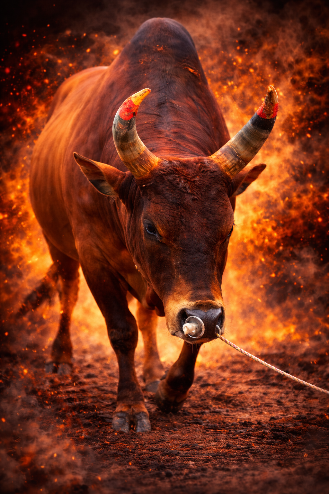

แดงร้อยวิชาดาวรุ่ง (วันเด็ก)
สี: แดง
สถิติ: 6-0
ค่ายโค:ค่ายโคสุภารดา
1.ชนะ สนามทุ่งสง
2.ชนะ สนามทุ่งสง
3.ชนะ ดุกด้างขุนเดช(อ้ายมส.)
4.ชนะ ดุกด้างเพชรอัศวินดำ
5.ชนะ ลายสตาร์วอร์(โยดา)
6.ชนะ โหนดเกียรตินำโชค(สามแสน)

ลังสาดวาสนาพาโชค(ลูกมดคันไฟ)
สี: ลังสาด
สถิติ: 6-0
ค่ายโค:ค่ายโคสุภารดา
1.ชนะ สนามระโนด
2.ชนะ สนามทรายขาว
3.ชนะ โหนดเอกวิชาขวัญใจท่าโด
4.ชนะ โหนดท้องลายตะวันแดง(ขุนแผน)
5.ชนะ แดงคอมโดมินิคไทแร็ตโต้(อ้ายเข้)
6.ชนะ ขาวงามฟ้าแลบน้อย

โหนดหลังขาวศิลป์ไทยยอดนักสู้(ซุปเปอร์บอล)
สี:โหนดหลังขาว
สถิติ: 7-เสมอ1
เจ้าของ:
1.ชนะ ดุกด้างทวีทรัพย์ สนามนาทราย
2.ชนะ แดงงามศักดิ์ทนงชัย (อ้ายผ่าน)
3.ชนะ ขาวเพชรสายัณห์ (แหลมทอง)
4.ชนะ ลังสาดราชสีห์ (บุญรอด)
5.ชนะ แดงงามเพชรพลอย (เพชรพลอย)
6.เสมอ โหนดบัลลังก์ทอง
7.ชนะ โหนดหลังขาวอัศวินแก่นเพชรยอดมงคลชัย (แมสซี่)
8.ชนะ แดงเหลี่ยมเพชรพยัคฆ์พันธ์ทาง (ไอ้มาร)

แดงชวนชม (ดอกบัวขาว)
สี:แดง
สถิติ: 6-0
ค่ายโค:ค่ายโคปชาทอง
1.ชนะ พระจันทร์ฉาย
2.ชนะ สุดหล่อควนโตน
3.ชนะ ขาวเพชรมีชัย
4.ชนะ ขาวงามจักรพรรดิ์ (ไอ้รถทัวร์)
5.ชนะ โหนดสิงห์โต (ไอ้ปิคนิค)
6.ชนะ ขาวงามยอดบัณฑิตเลื่องลือฤทธิ์พิชิตชัย (ลูกเบอร์สตูล)